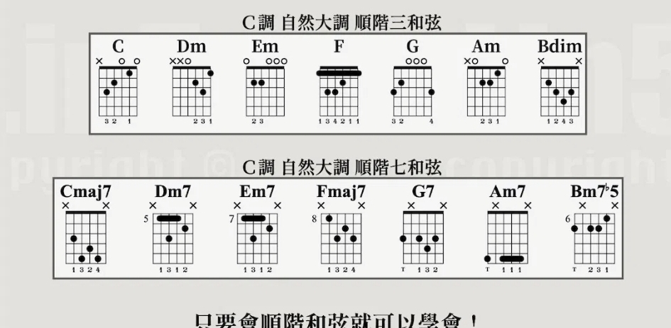

C 調自然大調順階和弦吉他按法對照圖
#

Slide 8 / 9
建立指板地圖與音樂語言的大腦邏輯
教學核心：音級 (Degree)、音程 (Interval)、基本和弦架構（三和弦與七和弦）、順階和弦 (Diatonic Chords)
實作重點：C-D-E-F-G-A-B-C 的全/半音排列、和弦結構與順階和弦推算
定義：音符在調性音階中的位置與角色名稱（以 C 大調為例）：
| 音級 | 中文名稱 | 英文名稱 | C調範例 | 角色與功能說明 |
|---|---|---|---|---|
| 1級 (1st) | 主音 | Tonic | C | 調性中心、絕對穩定與歸屬感。 |
| 2級 (2nd) | 上主音 | Supertonic | D | 主音上方的音，具輕微不穩定感。 |
| 3級 (3rd) | 中音 | Mediant | E | 位於主音與屬音中間，決定大/小調色彩。 |
| 4級 (4th) | 下屬音 | Subdominant | F | 主音下方五度的對應音，傾向引導至屬音。 |
| 5級 (5th) | 屬音 | Dominant | G | 重要性僅次於主音，具有極強回歸主音的動能。 |
| 6級 (6th) | 下中音 | Submediant | A | 位於主音與下屬音中間（關係小調根音）。 |
| 7級 (7th) | 導音 | Leading Tone | B | 距離主音僅半音，有極強烈的「向上解決」至主音傾向。 |
定義：兩音之間的距離（以「半音數 / 吉他格數」測量，以 C 為基準）：
| 音程名稱 | 英文縮寫 | 半音數(吉他格數) | C調音符範例 | 聽感與特色說明 |
|---|---|---|---|---|
| 完全一度 / 八度 | P1 / P8 | 0 / 12 格 | C - C | 完全協和，同音或頻率翻倍。 |
| 小二度 / 大二度 | m2 / M2 | 1 / 2 格 | C-D♭ / C-D | m2 極度摩擦緊張；M2 輕微不協和（全音）。 |
| 小三度 / 大三度 | m3 / M3 | 3 / 4 格 | C-E♭ / C-E | 和弦靈魂！m3 聽感憂鬱，M3 聽感明亮。 |
| 完全四度 / 完全五度 | P4 / P5 | 5 / 7 格 | C-F / C-G | 強烈協和，P5 為 Power Chord（五度和弦）基礎。 |
| 增四 / 減五度 | TT (Tritone) | 6 格 | C-F♯ (G♭) | 三全音！極度緊張不穩定，屬七和弦核心。 |
| 小六度 / 大六度 | m6 / M6 | 8 / 9 格 | C-A♭ / C-A | 具抒情、浪漫與延伸感。 |
| 小七度 / 大七度 | m7 / M7 | 10 / 11 格 | C-B♭ / C-B | m7 常用於屬七/爵士樂；M7 具夢幻張力。 |
由三個相距三度的音所組成（主音 + 三音 + 五音），可分為四種基本型態：
| 類別 | 音程組成 (由下而上) | 組成音 | 和弦記號 |
|---|---|---|---|
| 1) 大三和弦 | M3, m3 | 1, 3, 5 | 無 , maj , M 或 Δ |
| 2) 小三和弦 | m3, M3 | 1, ♭3, 5 | m , min 或 - |
| 3) 減三和弦 | m3, m3 | 1, ♭3, ♭5 | dim 或 o |
| 4) 增三和弦 | M3, M3 | 1, 3, ♯5 | aug 或 + |
結構與範例說明：
以三和弦為基礎，再疊加一個由根音往上的「7度音」，共由四個音組成：
| 類別 | 音程組成 | 組成音 | 和弦記號 |
|---|---|---|---|
| 1) 大七和弦 | M3, m3, M3 | 1, 3, 5, 7 | maj7 , M7 或 Δ7 |
| 2) 小七和弦 | m3, M3, m3 | 1, ♭3, 5, ♭7 | m7 , min7 或 -7 |
| 3) 屬七和弦 | M3, m3, m3 | 1, 3, 5, ♭7 | 7 |
| 4) 半減七和弦 | m3, m3, M3 | 1, ♭3, ♭5, ♭7 | m7(♭5) , m7-5 或 ϕ |
| 5) 減七和弦 | m3, m3, m3 | 1, ♭3, ♭5, ♭♭7 | dim7 , o7 |
結構範例與推導：
定義：順著 C 大調自然音階 (1 2 3 4 5 6 7) 依三度疊加所產生的和弦群：
| 音級 | 級數記號 | 三和弦 | 七和弦 | 和聲功能 (Function) |
|---|---|---|---|---|
| I 級 | I / Imaj7 | C | Cmaj7 | 主和弦功能 (Tonic - T) - 最穩定 |
| II 級 | IIm / IIm7 | Dm | Dm7 | 下屬和弦功能 (Sub-Dominant - SD) |
| III 級 | IIIm / IIIm7 | Em | Em7 | 主和弦代理 (Tonic - T) |
| IV 級 | IV / IVmaj7 | F | Fmaj7 | 下屬和弦功能 (Sub-Dominant - SD) |
| V 級 | V / V7 | G | G7 | 屬和弦功能 (Dominant - D) - 傾向解決至 I |
| VI 級 | VIm / VIm7 | Am | Am7 | 主和弦代理 (Tonic - T) |
| VII 級 | VII° / VIIø | Bdim | Bm7-5 | 屬和弦代理 (Dominant - D) |

課後實作練習：
1. 在吉他第 6 弦與第 5 弦上，依序找出 C(1) - D(2) - E(3) - F(4) - G(5) - A(6) - B(7) 的位置。
2. 體會 7 級音 (B) 彈完後，手指想彈回 1 級音 (C) 的「導音解決感」。
3. 壓出 1級(C) + 3級(E) + 5級(G)，驗證大三度的明亮聽感。